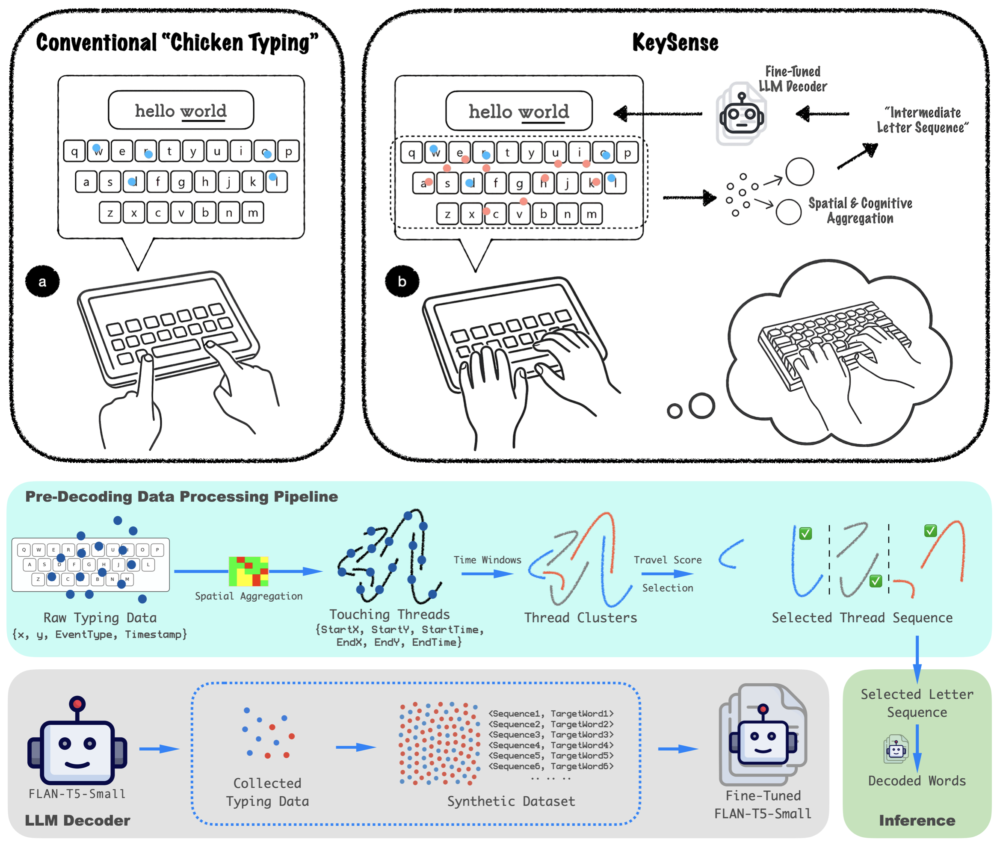
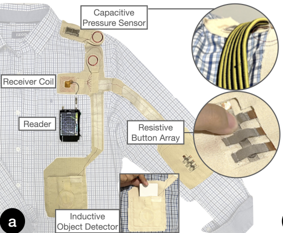
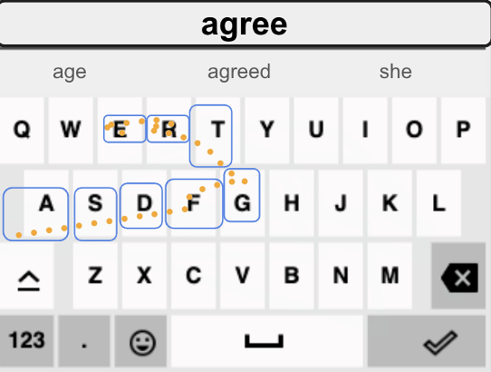

-->
|

|
KeySense: LLM-Powered Hands-Down, Ten-Finger Typing on Commodity
Touchscreens
Tony Li, Yan Ma, Zhuojun Li, Chun Yu, IV Ramakrishnan, Xiaojun Bi
Under Review, 2025
KeySense turns commodity touchscreens into hands-down ten-finger keyboards by distinguishing resting contacts from intentional keystrokes and decoding them with a fine-tuned large language model. It reuses physical-keyboard muscle memory, enabling fast, low-fatigue text entry without extra hardware.
|
|

|
BIT: Battery-free, IC-less and Wireless Smart Textile Interface and Sensing
System
Weiye Xu, Tony Li, Yuntao Wang, Xing-Dong Yang, Te-Yen Wu
ACM Conference on Human Factors in Computing Systems (CHI), 2025
BIT is a smart textile interface that eliminates batteries, ICs, and connectors, using multi-resonant circuits and wireless electromagnetic coupling for power and sensing. It supports resistive, capacitive, and inductive sensors, enabling seamless, sustainable, and flexible interactions in wearable technology.
|
|

|
LLM-powered Text Entry in Virtual Reality
Yan Ma, Tony Li, Zhi Li, Xiaojun Bi
IEEE Conference on Virtual Reality and 3D User Interfaces (IEEE VR), 2025, Research Demo
This demo presents an LLM-powered VR text entry system that enhances input accuracy and flexibility. Supporting raycasting and joystick-based tap and word-gesture typing, it integrates a fine-tuned FLAN-T5 decoder, achieving 93.1% accuracy on word-gesture typing and 95.4% on tap typing.
|
|